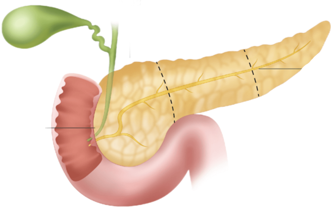
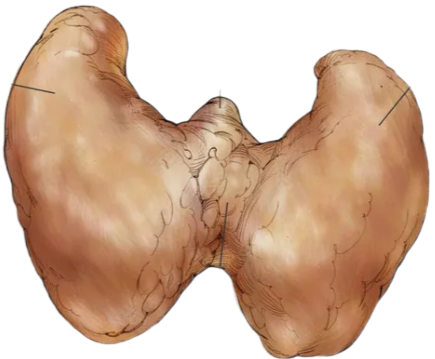
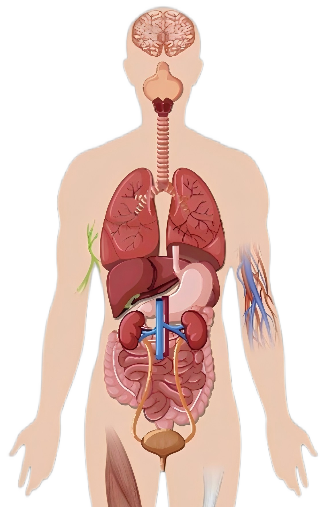

Cancer
Arises from genetic changes leading to uncontrolled cell growth and tumor formation, often triggered by a combination of environmental factors, lifestyle choices, and inherited genetic mutations.
Causes and Risk Factors:
• Genetic Changes:
DNA Mutations, Inherited Mutations, Acquired Mutations
• Carcinogens: Exposure to substances known as carcinogens, which can be physical, chemical, or biological, can increase the risk of cancer.
• Lifestyle Choices: Smoking, Diet, Obesity, Lack of Physical Activity, Alcohol Consumption, Sun Exposure
• Infections: Certain infections, like those caused by the Human Papillomavirus (HPV) or Hepatitis B and C viruses, can increase the risk of specific cancers.
• Age: The risk of developing cancer increases with age
• Carcinogens: Exposure to substances known as carcinogens, which can be physical, chemical, or biological, can increase the risk of cancer.
• Lifestyle Choices: Smoking, Diet, Obesity, Lack of Physical Activity, Alcohol Consumption, Sun Exposure
• Infections: Certain infections, like those caused by the Human Papillomavirus (HPV) or Hepatitis B and C viruses, can increase the risk of specific cancers.
• Age: The risk of developing cancer increases with age